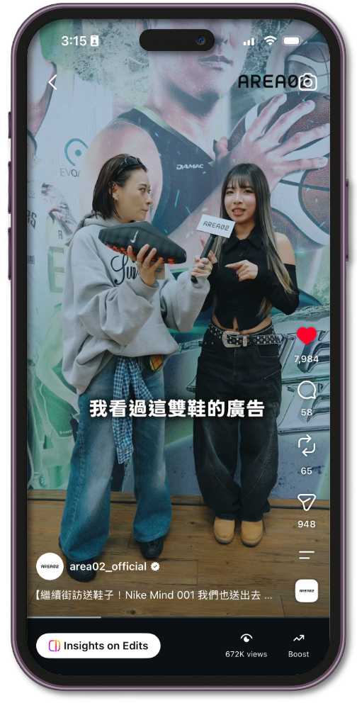

A street-interview series built around the idea of "live market prices" — framing sneakers and luxury goods like stocks to reinforce AREA 02's positioning as the price-authority platform of a streetwear exchange.
Content follows an interactive structure — guess the price → reveal the actual sale price → break it down — using real street interviews to show the gap between a listed price and the real transaction price, and how liquidity shapes valuation, teaching viewers to read price trends. That "live-market gap" then becomes the hook that drives viewers to download the App and check the value of their own collections — completing the shift from content to conversion.